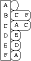

|
 |

adjacency_list<EdgeList, VertexList, Directed,
VertexProperties, EdgeProperties,
GraphProperties>
adjacency_list クラスは一般化された隣接リストグラフ構造を実装する。 テンプレート・パラメータは要求を最も満たすクラスのバージョンを選べるように 多くの形態の選択肢を提供する。adjacency-list は基本的に二次元の構造で、ここで最初の次元の各要素は頂点を表し、頂点の 各々はその辺リストの一次元構造を含んでいる。 Figure 1 は有向グラフの隣接リスト表現を示す。
adjacency_list クラスの VertexList テンプレート・パラメータ は外部の二次元コンテナを表すためにどんな種類のコンテナが使われるかを制御する。 EdgeList テンプレート・パラメータは辺リストを表すためにどんな種類の コンテナが使われるかを制御する。EdgeList と VertexList の 選択はグラフ構造の空間複雑性を決定するだろう、そして様々なグラフ操作の時間 複雑性を決定するだろう。可能な選択とトレード・オフは章 Choosing the Edgelist and VertexList 中で論じられる。Directed テンプレート・パラメータはグラフが有向か無向か、または 入辺と出辺の両方にアクセスする (これを双方向性と呼ぶ) 有向かを制御する。 双方向性グラフは各辺が出辺リストと入辺リストの両方に現れるため、辺当たり 有向グラフの二倍の空間を取る。Figure 2 は無向グラフの隣接リスト表現 を示す。
adjacency_list クラスの使い方のチュートリアルは章 Using adjacency_list にある。
examples/family-tree-eg.cpp 中にある例は家族の木 (family tree) をグラフで表現する方法を示す。
| パラメータ | 説明 | デフォルト |
|---|---|---|
| EdgeList | 各々の頂点の辺リストを表わすために使われるコンテナのための選択子。 | vecS |
| VertexList | グラフの頂点リストを表すために使われるコンテナのための選択子。 | vecS |
| Directed | グラフが有向か、無向か、または双方向の辺アクセス (出辺と入辺の両方にアクセス する) の有向かを選ぶ選択子。選択肢は directedS、undirectedS、 そして bidirectionalS である。 | directedS |
| VertexProperties | 内部のプロパティの記憶領域を指定する。 | no_property |
| EdgeProperties | 内部のプロパティの記憶領域を指定する。 | no_property |
| GraphProperties | グラフ・オブジェクトのためのプロパティの記憶領域を指定する。 | no_property |
VertexAndEdgeListGraph, MutablePropertyGraph, CopyConstructible, and Assignable.
boost/graph/adjacency_list.hpp
色、距離、重み、そしてユーザ定義のプロパティのようなプロパティは、プロパティ を用いてグラフの頂点と辺に結びつけることができる。プロパティの値はグラフに よって提供されるプロパティ・マップ経由で読み書きできる。プロパティ・マップ は get(property, g) 関数経由で得られる。プロパティの使い方は 章 Internal Properties 内で述べられている。プロパティ・マップは章 Property Map Concepts 内で定義されているインターフェースを実装するオブジェクトである。 adjacency_list クラスから得られるプロパティ・マップは Lvalue Property Map コンセプトのモデルである。もし adjacency_list が const なら、 プロパティ・マップは定数である。さもなくばプロパティ・マップは変更可能である。
もしグラフの VertexList が vecS なら、グラフは vertex_index_t プロパティのためのプロパティ・マップを経由して アクセスされた組み込みの頂点の添え字を持っている。添え字は [0, num_vertices(g)) の範囲内に整列し、連続している。頂点が 削除される時、添え字はそれらのプロパティを持ち続けるよう調整される。 これらの添え字を外部のプロパティの記憶領域にアクセスするために使う際には いくらか気をつけなければならない。 頂点の添え字のためのプロパティ・マップは Readable Property Map のモデルである。
typedef adjacency_list<listS, vecS> Graph; // VertexList=vecS
Graph G(N);
// グラフに書き込む...
// 全ての頂点を削除しようとする試み。間違っている！
graph_traits<Graph>::vertex_iterator vi, vi_end;
for (tie(vi, vi_end) = vertices(G); vi != vi_end; ++vi)
remove_vertex(*vi, G);
// 全ての頂点を削除する。これでもまだ間違っている！
graph_traits<Graph>::vertex_iterator vi, vi_end, next;
tie(vi, vi_end) = vertices(G);
for (next = vi; vi != vi_end; vi = next) {
++next;
remove_vertex(*vi, G);
}
これが問題である理由は remove_vertex() を呼び出しており、そして
それが VertexList=vecS の adjacency_list と共に
使われた時、グラフのための全てのイテレータと記述子 (例えば vi や
vi_end) を無効にするために、ループの次の繰り返し中に災難を引き起こす。
もし異なる種類の adjacency_list を使い、そして VertexList=listS ならば、イテレータが削除された実際の頂点を指して なければ remove_vertex を呼ぶことによってイテレータは無効に ならない。次のコードはこれを説明する。
typedef adjacency_list<listS, listS> Graph; // VertexList=listS
Graph G(N);
// グラフに書き込む...
// 全ての頂点を削除しようとする試み。間違っている！
graph_traits<Graph>::vertex_iterator vi, vi_end;
for (tie(vi, vi_end) = vertices(G); vi != vi_end; ++vi)
remove_vertex(*vi, G);
// 全ての頂点を削除する。これは大丈夫である
graph_traits<Graph>::vertex_iterator vi, vi_end, next;
tie(vi, vi_end) = vertices(G);
for (next = vi; vi != vi_end; vi = next) {
++next;
remove_vertex(*vi, G);
}
安定性の問題は更に頂点記述子と辺記述子に影響を及ぼす。例えば、最短経路木中 の頂点の親 (または先行点) の過程を保持するために頂点記述子の vector を使った としよう (examples/dijkstra-example.cpp を見よ)。dijkstra_shortest_paths() を呼んで親の vector を作成し、 それからグラフから頂点を削除する。続いて親の vector を使おうと試みるが、 全ての頂点記述子は無効になっているので、結果は正しくない。
std::vector<Vertex> parent(num_vertices(G));
std::vector<Vertex> distance(num_vertices(G));
dijkstra_shortest_paths(G, s, distance_map(&distance[0]).
predecessor_map(&parent[0]));
remove_vertex(s, G); // まずい考えだ！親 vector 中の頂点記述子を無効にする
// 次は間違った結果を生じる
for(tie(vi, vend) = vertices(G); vi != vend; ++vi)
std::cout << p[*vi] << " is the parent of " << *vi << std::endl;
この議論の中でイテレータと記述子の無効化は、操作によって直接影響を受け ないイテレータと記述子の無効化に携わっている事に注意しなさい。 例えば、remove_edge(u, v, g) の実行は、adjacency_list の種類に関係なく、いつも (u,v) のための どの辺記述子も、また(u,v) を指すどの辺記述子も無効にするだろう。 このイテレータと記述子の無効化の議論中で、他の辺 ((u,v) ではない) を指す辺記述子とイテレータにおける remove_edge(u, v, g) の影響 にのみ携わっている。
一般的に頂点記述子と辺記述子を安定に (決して無効にならない) したければ、 adjacency_list の VertexList と EdgeList テンプレート・パラメータのために listS または setS を使いなさい。もし記述子とイテレータの安定性に気をもまないけれどもメモリの 消費量とグラフの巡回速度をより心配するなら、VertexList かつ/または EdgeList テンプレート・パラメータのために vecS を 使いなさい。
下記の表はどの操作が記述子とイテレータを無効にする原因となるかを要約する。 表中で、EL は EdgeList の省略形で VL は VertexList を意味する。Adj Iter (隣接イテレータ) カテゴリは out_edge_iterator、in_edge_iterator、そして adjacency_iterator 型を含む。記述子とイテレータの無効化の より詳しい説明は各操作のドキュメント中で示されている。
| 関数 | 頂点記述子 | 辺記述子 | 頂点イテレータ | 辺イテレータ | 隣接イテレータ |
|---|---|---|---|---|---|
| add_edge() | OK | OK | OK | EL=vecS && Directed=directedS | EL=vecS |
| remove_edge() remove_edge_if() remove_out_edge_if() remove_in_edge_if() clear_vertex() | OK | OK | OK | EL=vecS && Directed=directedS | EL=vecS |
| add_vertex() | OK | OK | OK | OK | OK |
| remove_vertex() | VL=vecS | VL=vecS | VL=vecS | VL=vecS | VL=vecS |
adjacency_list(const GraphProperty& p = GraphProperty())デフォルト・コンストラクタ。0 個の頂点と0 個の辺からなる空のグラフ・ オブジェクトを作成する。
adjacency_list(const adjacency_list& x)コピー・コンストラクタ。辺、頂点、そしてプロパティを含んでいる グラフ x のコピーである新しいグラフを作成する。
adjacency_list& operator=(const adjacency_list& x)代入演算子。this に 辺、頂点、そしてプロパティを含んでいる グラフ x のコピーを入れる。
adjacency_list(vertices_size_type n,
const GraphProperty& p = GraphProperty())
n 個の頂点と 0 個の辺からなるグラフ・オブジェクトを作成する。
template <class EdgeIterator>
adjacency_list(EdgeIterator first, EdgeIterator last,
vertices_size_type n,
edges_size_type m = 0,
const GraphProperty& p = GraphProperty())
n 個の頂点と、範囲 [first, last) で与えられた辺リストで
指定された辺からなるグラフ・オブジェクトを作成する。
EdgeIterator は InputIterator
のモデルでなければならない。EdgeIterator の値型は std::pair
でなければならず、そしてペア中の型は汎整数型である。整数は頂点に該当し、
それらは [0, n) の範囲内に整列していなければならない。
template <class EdgeIterator, class EdgePropertyIterator>
adjacency_list(EdgeIterator first, EdgeIterator last,
EdgePropertyIterator ep_iter,
vertices_size_type n,
vertices_size_type m = 0,
const GraphProperty& p = GraphProperty())
n 個の頂点と、範囲 [first, last) で与えられた辺リストで
指定された辺からなるグラフ・オブジェクトを作成する。
EdgeIterator と EdgePropertyIterator は InputIterator の
モデルでなければならない。EdgeIterator の値型は std::pair
でなければならず、そしてペア中の型は汎整数型である。整数は頂点に該当し、
それらは [0, n) の範囲内に整列していなければならない。
ep_iter の value_type は EdgeProperties で
あるべきである。
void clear()グラフから全ての辺と頂点を削除する。
void swap(adjacency_list& x)this のグラフの頂点、辺、そしてプロパティと、グラフ x の頂点、辺、 そしてプロパティを交換する。
std::pair<vertex_iterator, vertex_iterator> vertices(const adjacency_list& g)グラフ g の頂点集合へのアクセスを提供するイテレータ範囲を返す。
std::pair<edge_iterator, edge_iterator> edges(const adjacency_list& g)グラフ g の辺集合へのアクセスを提供するイテレータ範囲を返す。
std::pair<adjacency_iterator, adjacency_iterator> adjacent_vertices(vertex_descriptor u, const adjacency_list& g)グラフ g 中の頂点 u に隣接する頂点へのアクセスを 提供するイテレータ範囲を返す。
std::pair<out_edge_iterator, out_edge_iterator> out_edges(vertex_descriptor u, const adjacency_list& g)グラフ g 中の頂点 u の出辺へのアクセスを提供する イテレータ範囲を返す。もしグラフが無向グラフなら、このイテレータ範囲は 頂点 u に接続する全ての辺へのアクセスを提供する。 有向グラフと無向グラフの両方で、出辺 e にとって v が u に隣接する頂点の場合は source(e, g) == u かつ target(e, g) == v である。
std::pair<in_edge_iterator, in_edge_iterator> in_edges(vertex_descriptor v, const adjacency_list& g)グラフ g 中の頂点 v の入辺へのアクセスを提供する イテレータ範囲を返す。この操作は Directed テンプレート・パラメータ に bidirectionalS が指定されている場合にのみ利用できる。 入辺 e にとって v に隣接している何らかの頂点 u に対して、グラフが有向であろうと無向であろうと、target(e, g) == v かつ source(e, g) == u である。
vertex_descriptor source(edge_descriptor e, const adjacency_list& g)辺 e の始点を返す。
vertex_descriptor target(edge_descriptor e, const adjacency_list& g)辺 e の終点を返す。
degree_size_type out_degree(vertex_descriptor u, const adjacency_list& g)頂点 u を出て行く辺の数を返す。
degree_size_type in_degree(vertex_descriptor u, const adjacency_list& g)頂点 u に入ってくる辺の数を返す。この操作は Directed テンプレート・パラメータにbidirectionalS が指定されている場合にのみ 利用できる。
vertices_size_type num_vertices(const adjacency_list& g)グラフ g 中の頂点の数を返す。
edges_size_type num_edges(const adjacency_list& g)グラフ g 中の辺の数を返す。
vertex_descriptor vertex(vertices_size_type n, const adjacency_list& g)グラフの頂点リスト中の n 番目の頂点を返す。
std::pair<edge_descriptor, bool>
edge(vertex_descriptor u, vertex_descriptor v,
const adjacency_list& g)
グラフ g 中の頂点 u と頂点 v を結ぶ辺を
返す。
std::pair<out_edge_iterator, out_edge_iterator>
edge_range(vertex_descriptor u, vertex_descriptor v,
const adjacency_list& g)
u から v への全ての多重辺のための範囲を与える出辺
イテレータのペアを返す。この関数は adjacency_list 用の
EdgeList が終点に従って出辺をソートし、かつ多重辺を考慮する
コンテナである時にのみ動作する。multisetS 選択子はそのような
コンテナを選択する。
std::pair<edge_descriptor, bool>
add_edge(vertex_descriptor u, vertex_descriptor v,
adjacency_list& g)
グラフに辺 (u,v) を付け加え、新しい辺のための辺記述子を返す。
多重辺を許可しないグラフにとっては、もし辺が既にグラフ中にあるなら、
二重には付け加えられず、bool フラグは
false になるだろう。同様に、もし u と v が
同じ頂点のための記述子 (ループを作っている) でありかつグラフが無向グラフ
ならば、辺は付け加えられずフラグは false になるだろう。
フラグが false の時は、返された辺記述子は既に存在している辺を指す。
出辺リスト中の新しい辺の配置は一般に不定である。もっとも出辺リストの順序付け は EdgeList の選択を通じて成し遂げられるが。
もし VertexList の選択子が vecS でありかつ頂点記述子 u または v (それは整数である) がグラフ中の現在の頂点の数 より大きな値を持っているなら、頂点の数が std::max(u,v) + 1 に なるようにグラフが拡大される。
もし EdgeList の選択子が vecS であれば、この操作によって 頂点 u のためのどの out_edge_iterator も無効になるだろう。 これはもし EdgeList が push(container, x) が呼び出された 時にそのイテレータを無効にするようなユーザ定義のコンテナ (章 Customizing the Adjacency List Storage を見なさい) であれば同様にあてはまる。 もしグラフが同様に双方向であれば、v のためのどの in_edge_iterator もやはり無効にされる。もしその代わりに グラフが無向グラフならば v のためのどの out_edge_iterator もやはり無効にされる。もしその代わりにグラフが有向グラフならば、 add_edge() は同様にどの edge_iterator も無効にする。
std::pair<edge_descriptor, bool>
add_edge(vertex_descriptor u, vertex_descriptor v,
const EdgeProperties& p,
adjacency_list& g)
辺 (u,v) をグラフに付け加え、p を辺の内部のプロパティの
記憶領域の値として添える。さらなる詳細のために前の add_edge()
メンバ関数も見なさい。
void remove_edge(vertex_descriptor u, vertex_descriptor v,
adjacency_list& g)
辺 (u,v) をグラフから取り除く。
この操作は辺 (u,v) を指すどの発行済みの辺記述子もイテレータも無効 となる原因になる。加えて、もし EdgeList の選択子が vecS ならば無向と双方向のグラフの場合この操作は頂点 u とまた頂点 v のための辺リストを指すどのイテレータも無効にするだろう。さらに、有向グラフ にとってこれはどの edge_iterator も無効にする。
void remove_edge(edge_descriptor e, adjacency_list& g)辺 e をグラフから取り除く。これは多重グラフの場合 remove_edge(u, v, g) 関数とは違う。この remove_edge(e, g) 関数は一つの辺だけを取り除くのに対して remove_edge(u, v, g) 関数は 全ての辺 (u,v) を取り除く。
この操作は記述子 e が指す同じ辺のためのどの発行済みの辺記述子も イテレータも無効にする。加えて、この操作は target(e, g) のための 辺リストを指すどのイテレータも無効にするだろう。さらに、有向グラフにとって これはグラフのためのどの edge_iterator も無効にする。
void remove_edge(out_edge_iterator iter, adjacency_list& g)これは remove_edge(*iter, g) と同じ効果を持つ。違いはこの関数は 有向グラフの場合定数の時間複雑性を持つのに対し、remove_edge(e, g) は O(E/V) の時間複雑性を持つ。
template <class Predicate>
void remove_out_edge_if(vertex_descriptor u, Predicate predicate,
adjacency_list& g)
グラフから predicate を満たす全ての頂点 u の出辺を取り除く。
すなわち、もし述語が辺記述子に適用された時 true を返すならば、辺が取り除か
れる。
記述子とイテレータの持続性に対する作用は削除された各辺において remove_edge() を呼び出す時のそれと同じである。
template <class Predicate>
void remove_in_edge_if(vertex_descriptor v, Predicate predicate,
adjacency_list& g)
グラフから predicate を満たす全ての頂点 v の入辺を取り除く。
すなわち、もし述語が辺記述子に適用された時 true を返すならば、辺が取り除か
れる。
記述子とイテレータの持続性に対する作用は削除された各辺において remove_edge() を呼び出す時のそれと同じである。
この操作は無向と双方向の adjacency_list グラフに利用できるが、 有向グラフには利用できない。
template <class Predicate> void remove_edge_if(Predicate predicate, adjacency_list& g)グラフから predicate を満たす全ての辺を取り除く。すなわち、 もし述語が辺記述子に適用された時 true を返すならば、辺が取り除かれる。
記述子とイテレータの持続性に対する作用は削除された各辺において remove_edge() を呼び出す時のそれと同じである。
vertex_descriptor add_vertex(adjacency_list& g)頂点をグラフに付け加え、新しい頂点のための頂点記述子を返す。
vertex_descriptor
add_vertex(const VertexProperties& p,
adjacency_list& g)
指定されたプロパティを持つ頂点をグラフに付け加える。新しい頂点のための
頂点記述子を返す。
void clear_vertex(vertex_descriptor u, adjacency_list& g)u への、そして u からの全ての辺を取り除く。頂点は依然として グラフの頂点集合中に現れる。
記述子とイテレータの持続性に対する作用は u を始点または終点として 持つ全ての辺にとって remove_edge() を呼び出す時のそれと同じである。
void clear_out_edges(vertex_descriptor u, adjacency_list& g)頂点 u からの全ての出辺を取り除く。頂点は依然としてグラフの 頂点集合中に現れる。
記述子とイテレータの持続性に対する作用は u を始点として 持つ全ての辺にとって remove_edge() を呼び出す時のそれと同じである。
この操作は無向グラフには適用できない (代わりに clear_vertex() を使いなさい)。
void clear_in_edges(vertex_descriptor u, adjacency_list& g)頂点 u からの全ての入辺を取り除く。頂点は依然としてグラフの 頂点集合中に現れる。
記述子とイテレータの持続性に対する作用は u を終点として 持つ全ての辺にとって remove_edge() を呼び出す時のそれと同じである。
この操作は双方向グラフにのみ適用できる。
void remove_vertex(vertex_descriptor u, adjacency_list& g)頂点 u をグラフの頂点集合から取り除く。頂点が削除される時、 頂点 u への、また頂点 u への辺は存在しないものと仮定する。 これを確実にする一つの手段はあらかじめ clear_vertex() を 呼ぶ事である。
もし adjacency_list の VertexList テンプレート・パラメータが vecS なら、グラフのための全ての頂点記述子、辺記述子、そしてイテレータ はこの操作によって無効にされる。各頂点のための組み込みの vertex_index_t プロパティは操作の後もなお頂点の添え字が連続した 範囲 [0, num_vertices(g)) に配列しているように番号が付け直される。 もし組み込みの頂点の添え字に基づく外部のプロパティの記憶領域を使って いるなら、外部の記憶領域は調整される必要があるだろう。 他の選択は組み込みの頂点の添え字を使用せずに独自の頂点の添え字 プロパティを付け加えるためにプロパティを代わりに使う事である。 もしたびたび remove_vertex() 関数を使用する必要があるなら、 VertexList テンプレート・パラメータには listS 選択子が 非常によい選択である。
template <class PropertyTag> property_map<adjacency_list, PropertyTag>::type get(PropertyTag, adjacency_list& g) template <class PropertyTag> property_map<adjacency_list, Tag>::const_type get(PropertyTag, const adjacency_list& g)PropertyTag で指定される頂点プロパティのためのプロパティ・マップ・ オブジェクトを返す。PropertyTag はグラフの VertexProperty テンプレート引数中に指定されたプロパティの一つに一致しなければならない。
template <class PropertyTag, class X> typename property_traits<property_map<adjacency_list, PropertyTag>::const_type>::value_type get(PropertyTag, const adjacency_list& g, X x)x が頂点記述子か辺記述子のどちらか一方である場合これは x のためのプロパティ値を返す。
template <class PropertyTag, class X, class Value> void put(PropertyTag, const adjacency_list& g, X x, const Value& value)これは x のためのプロパティ値を value にする。x は頂点記述子か辺記述子のどちらか一方である。Value は typename property_traits<property_map<adjacency_list, PropertyTag>::type>::value_type と互換でなければならない。
template <class GraphProperties, class GraphPropertyTag> typename graph_property<adjacency_list, GraphPropertyTag>::type& get_property(adjacency_list& g, GraphPropertyTag);グラフ・オブジェクト g に結びつけられた GraphPropertyTag で指定されたプロパティを返す。graph_property 特性クラスは boost/graph/adjacency_list.hpp 中で定義されている。
template <class GraphProperties, class GraphPropertyTag> const typename graph_property<adjacency_list, GraphPropertyTag>::type& get_property(const adjacency_list& g, GraphPropertyTag);グラフ・オブジェクト g に結びつけられた GraphPropertyTag で指定されたプロパティを返す。graph_property 特性クラスは boost/graph/adjacency_list.hpp 中で定義されている。
| Copyright © 2000-2001 |
Jeremy Siek,
Indiana University (jsiek@osl.iu.edu) Lie-Quan Lee, Indiana University (llee@cs.indiana.edu) Andrew Lumsdaine, Indiana University (lums@osl.iu.edu) |
Japanese Translation Copyright © 2003 Takashi Itou
オリジナルの、及びこの著作権表示が全ての複製の中に現れる限り、この文書の複製、利用、変更、販売そして配布を認める。このドキュメントは「あるがまま」に提供されており、いかなる明示的、暗黙的保証も行わない。また、いかなる目的に対しても、その利用が適していることを関知しない。
このドキュメントの対象: Boost Version 1.30.0
最新版ドキュメント (英語)